The provisions of this appendix shall regulate the division of the city of New York into geographical territories known as fire districts and control the occupancy groups and construction classes permitted in the fire districts. Wherever reference is made to the Fire District, it shall be construed to mean the fire districts designated and referred to in this appendix.
D101.2 Establishment of fire district.
The following city areas are hereby established as being inside the fire districts:
1. All of the borough of Manhattan.
2. All of the borough of Bronx.
3. All of the borough of Brooklyn.
4. Such portions of the boroughs of Staten Island and Queens as are indicated on the "fire district maps" as per Section D106.
Section BC D102: Building Restrictions
D102.1 Types of construction permitted.
Every building hereafter erected within the fire district, or located partially in the fire district pursuant to Section D104.1, shall be either Type I, II, III or IV.
D102.2 Other specific requirements.
D102.2.1 Group H-1 prohibited.
Group H-1 occupancies shall be prohibited from location within the fire district.
D102.2.2 Construction type.
Every building, room, or space hereafter altered or erected shall be constructed as required based on the type of construction indicated in Chapter 6 except as provided in Section D102.2.4.
D102.2.3 Roof covering.
Roof covering in the fire district shall conform to the requirements of Class A or B roof coverings as defined in Section 1505.
D102.2.4 Structural fire rating.
The fire-resistance rating of bearing walls, floors, roofs and their supporting structural members shall comply with Table 601 of Chapter 6, but in no event shall such rating be less than 1-hour.
Exceptions. The following buildings or building elements may be constructed with fire-resistance rating in accordance with Table 601:
1. Buildings of Type IV construction.
2. Buildings equipped throughout with an automatic sprinkler system in accordance with Section 903.3.1.1.
3. Automobile parking structures.
4. Buildings surrounded on all sides by a permanently open space of not less than 30 feet (9144 mm).
5. Partitions complying with Section 603.1, Item 11.
D102.2.5 R-1 and R-2 Occupancies.
No building or space classified in Occupancy Group R-1 or R-2 may be located on a lot containing a building classified in construction Type IIB, VA or VB.
Section BC D103: Changes to Buildings
D103.1 Existing buildings within the fire district.
An existing building shall not hereafter be increased in height or area unless it is of a type of construction permitted for new buildings within the fire district or is altered to comply with the requirements for such type of construction. Nor shall any existing building be hereafter extended on any side, nor square footage or floors added within the existing building unless such modifications are of a type of construction permitted for new buildings within the fire district.
D103.2 Other alterations.
Nothing in Section D103.1 shall prohibit other alterations within the fire district provided there is no change of occupancy that is otherwise prohibited and provided the fire hazard is not increased by such alteration.
D103.3 Moving buildings.
Buildings shall not hereafter be moved into the fire district or to another lot in the fire district unless the building is of a type of construction permitted in the fire district.
Section BC D104: Buildings Located Partially In the Fire District
D104.1 General.
Any building located partially in the fire district, so that it is both inside and outside the district, shall be of a type of construction required for the fire district if more than 25 percent of the total floor area of the building is located inside the fire district.
Section BC D105: Exceptions to Restrictions in Fire District
D105.1 General.
The preceding provisions of this appendix shall not apply in the following instances:
1. Temporary platforms, reviewing stands, and similar miscellaneous structures used for a limited period of time, subject to the approval of the commissioner.
2. Fences not over 6 feet (1829 mm) high.
3. Water towers, tank structures, and trestles may be constructed of wood planking and timbers of dimensions not less than as required for Type IV construction when not over 35 feet (10 668 mm) high and having an exterior separation of at least 30 feet (9144 mm).
4. Detached greenhouses accessory to a one- or two-family dwelling located on the same lot at least 6 feet (1829 mm) from any lot line or building walls and not exceeding 14 feet (4267 mm) in height.
5. Porches on dwellings not over one story in height, and not over 10 feet (3048 mm) wide from the face of the building, provided such porch does not come within 5 feet (1524 mm) of any property line.
6. Sheds open on a long side not over 15 feet (4572 mm) high and 500 square feet (46 m
2
) in area.
7. Existing one- and two-family dwellings of a type of construction not permitted in the fire district can be extended 25 percent of the floor area existing at the time of inclusion in the fire district by any type of construction permitted by this code.
8. Wood decks less than 600 square feet (56 m
2
) where constructed of 2-inch (51 mm) nominal wood, pressure treated for exterior use.
9. 9. One- or two-family detached or semidetached dwellings of two stories or less in height and 2,500 square feet (232 m
2
) or less in area per story located within Zoning Districts R-2 through R-5 may be constructed or reconstructed of construction Type VA, or if damaged for any cause only the damaged portions shall be required to be reconstructed to conform to Type VA construction. In addition, one-family dwellings located within Zoning District R-1 anywhere in the city, may be constructed of Type VB construction in conformance with the area and height limits established by Tables 504.3, 504.4 and 506.2 of this code.
10. An accessory building or structure used as an office or similar use for an open parking lot located on the same lot, may be constructed of Type VA or VB construction provided its area shall be limited to 150 square feet (14 m
2
) and height of 10 feet (3048 mm) maximum. Such structure shall be located not less than 6 feet (1829 mm) from any lot line or buildings on the same lot.
11. Temporary fences, sidewalk sheds, signs, and other safeguards installed in accordance with Chapter 33.
12. One- or two-family detached, zero lot line or semi-detached dwellings of three stories in height and 2,500 square feet (232 m
2
) or less in area per story located within Zoning Districts R-1 through R-5 within Lower Density Growth Management Areas as defined by the New York City Zoning Resolution may be constructed or reconstructed of construction Type VA where such buildings are equipped throughout with an automatic sprinkler system in accordance with Section 903.3.1.1, or if damaged for any cause only the damaged portions shall be required to be reconstructed to conform to Type VA construction where such buildings are equipped throughout with an automatic sprinkler system in accordance with Section 903.3.1.1. In addition, no portion of a one- or two-family detached, zero lot line or semi-detached dwellings located within Zoning Districts R-1, R-2 or R-5 within Lower Density Growth Management Areas shall exceed a maximum building height of 35 feet (10 668 mm) above the grade plane.
Section BC D106: Fire District Maps for the Boroughs of Staten Island (Richmond County) and Queens
D106.1 Fire district maps.
Within the boroughs of Staten Island (Richmond County) and Queens, the fire districts shall comprise such areas indicated on the "fire district maps" as per Figures D106.1(1) and D106.1(2).
Figure D106.1(1) Fire District Maps Borough of Staten Island (Richmond County)
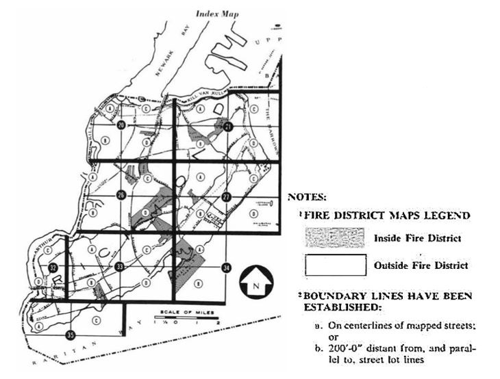
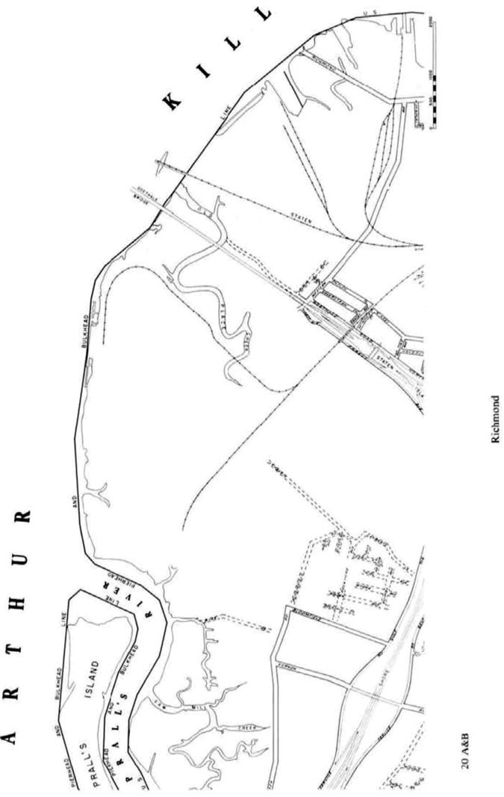
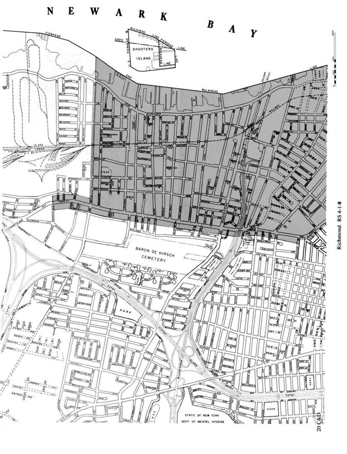
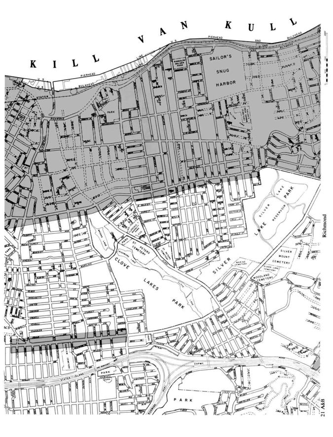
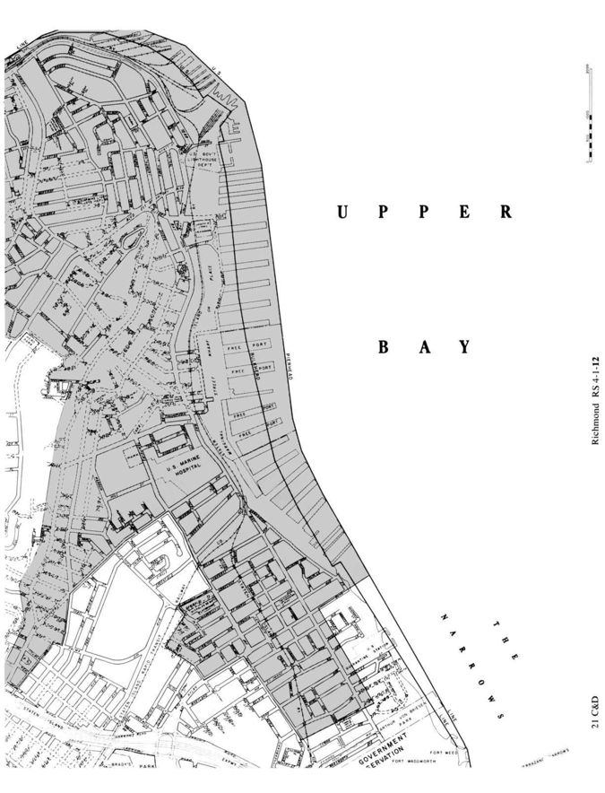
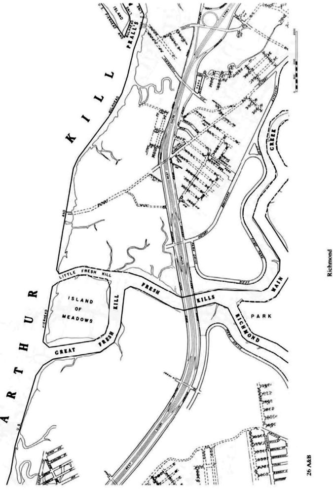
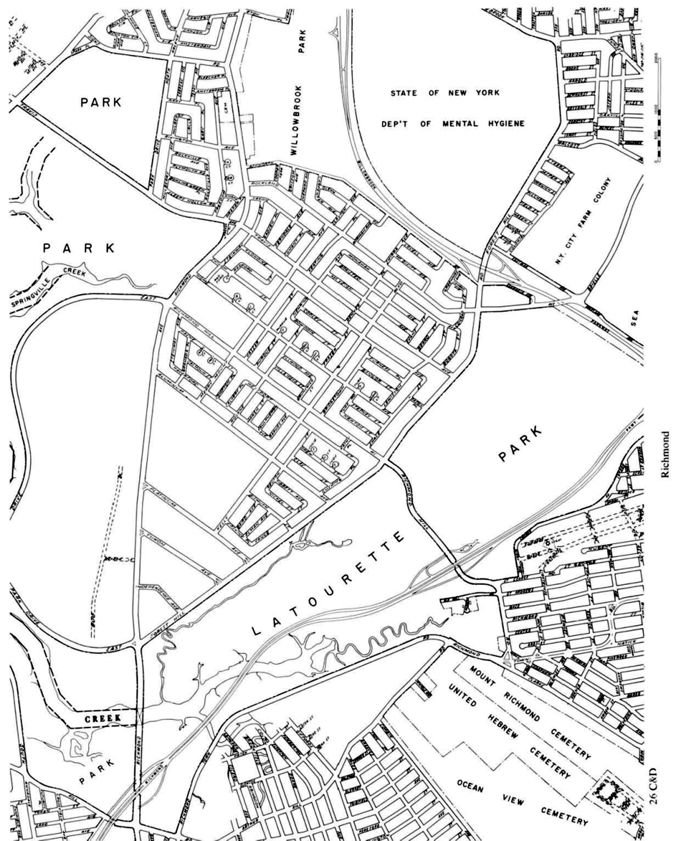
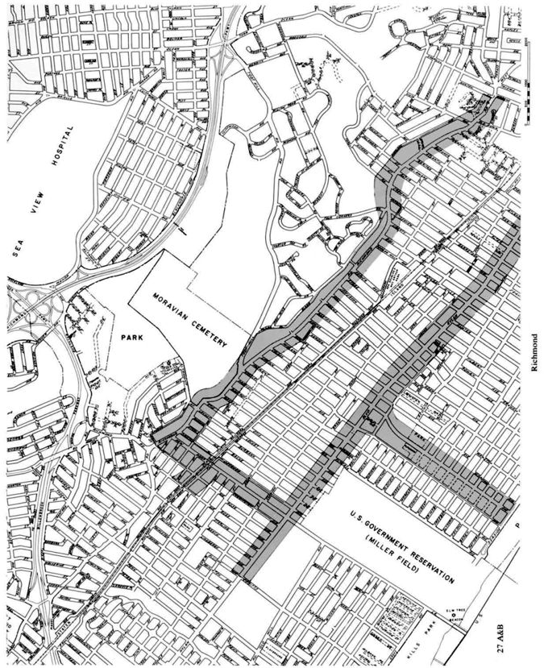
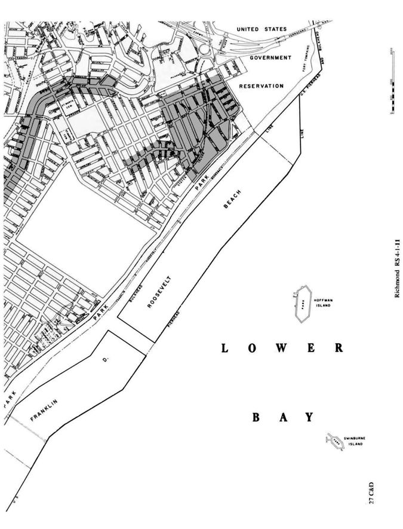
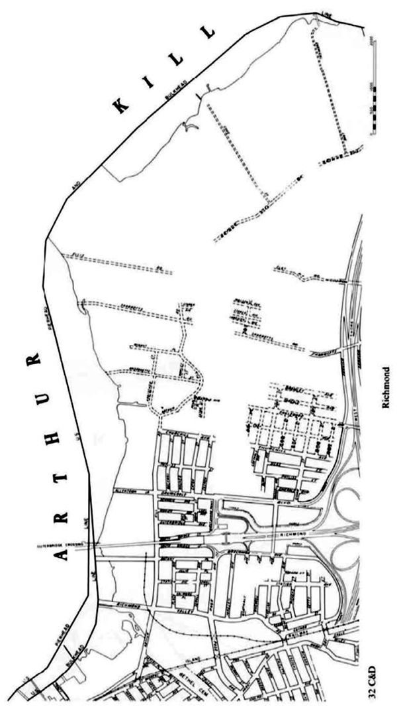
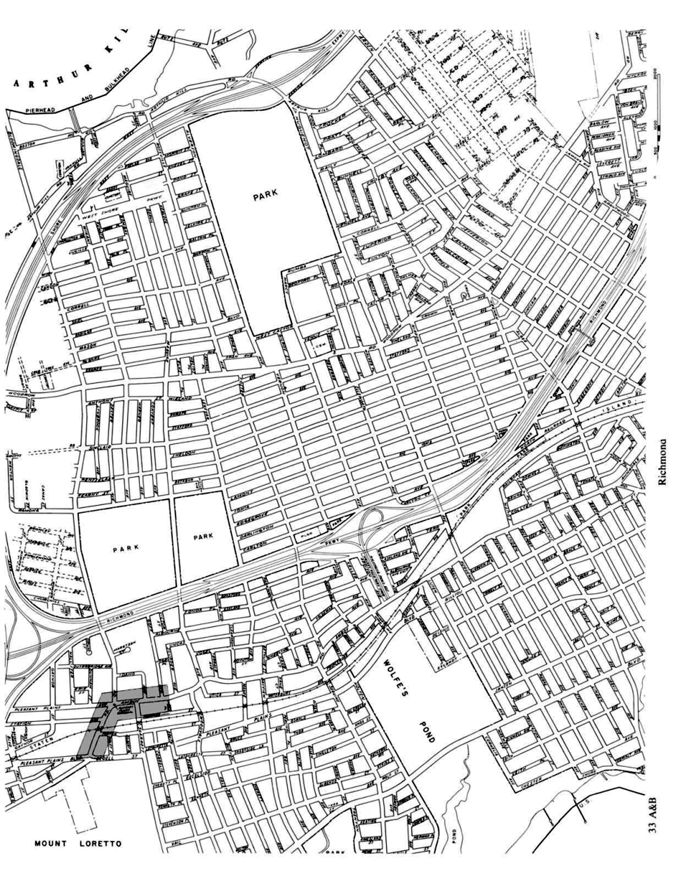
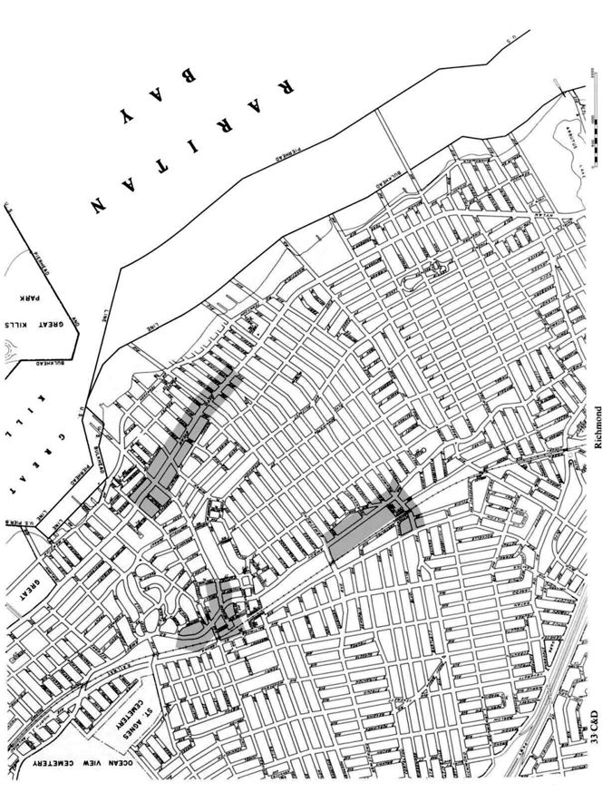
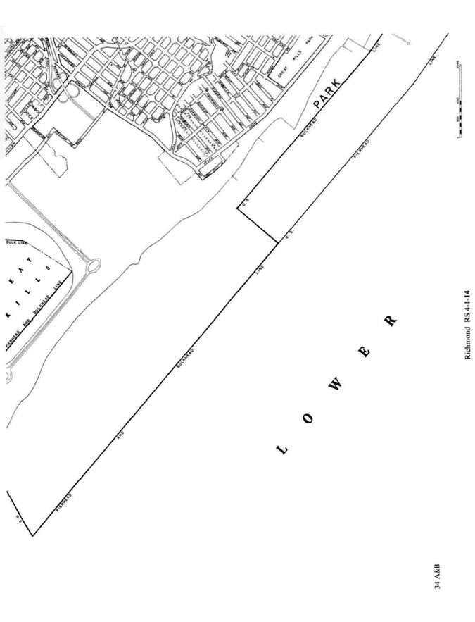
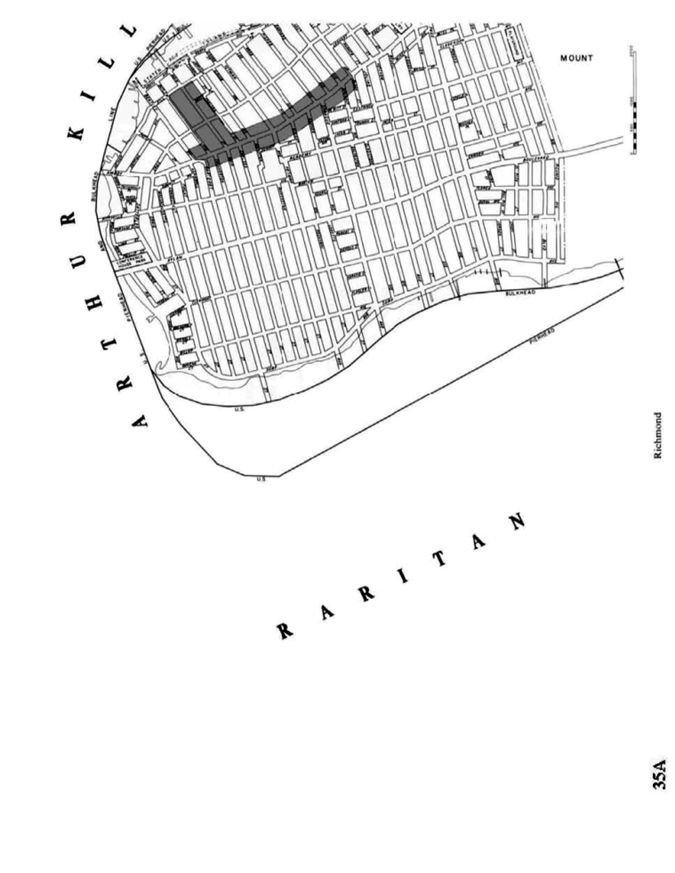
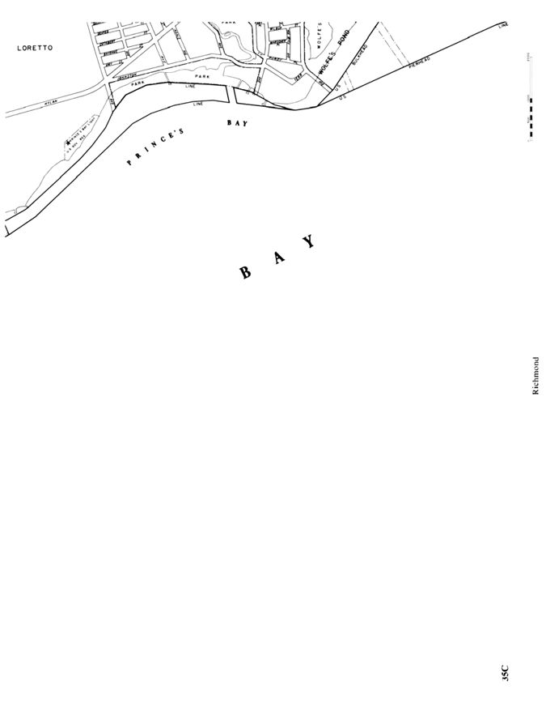
Figure D106.1(2) Fire District Maps Borough of Queens